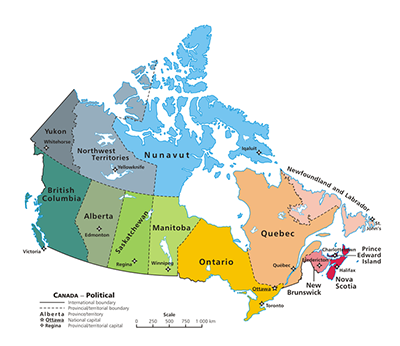

Kanada
Kanada je površinom od 9.984.670 km² druga po veličini zemlja na svijetu (prva je Rusija). Nalazi se na sjeveru sjevernoameričkog kontinenta, graniči sa SAD-om na jugu i sjeveru (Aljaska), na zapadu izlazi na Tihi ocean, a na istoku na Atlantski ocean. Glavni grad Kanade je Ottawa.
Toronto je glavno gospodarsko središte. Ostali važni gradovi su Montreal (najveći grad francuske Kanade), Vancouver, Edmonton i Calgary. Prema popisu iz 2001. ima 30.007.094 stanovnika (3.3 na km²) Kanada je nastala kao unija britanskih kolonija na sjevernoameričkom kontinentu. Kao federalna unija sa statusom dominiona sastoji se od deset provincija i tri teritorija. Kanada je 1867. na miran način dobila samostalnost od Velike Britanije.
Kanada je parlamentarna demokracija i ustavna monarhija s kraljicom Elizabetom II. kao monarhom. Kanada je multikulturalna država s dva službena jezika: engleskim i francuskim. Kanada je jedna od zemalja s najrazvijenijim gospodarstvom. Temelj gospodarstva čine velika prirodna bogatstva i trgovina posebice sa SAD-om u sklopu NAFTA-e. Kanada je članica G8 i NATO-a. © Petra Jakopović, prosinac 2016.